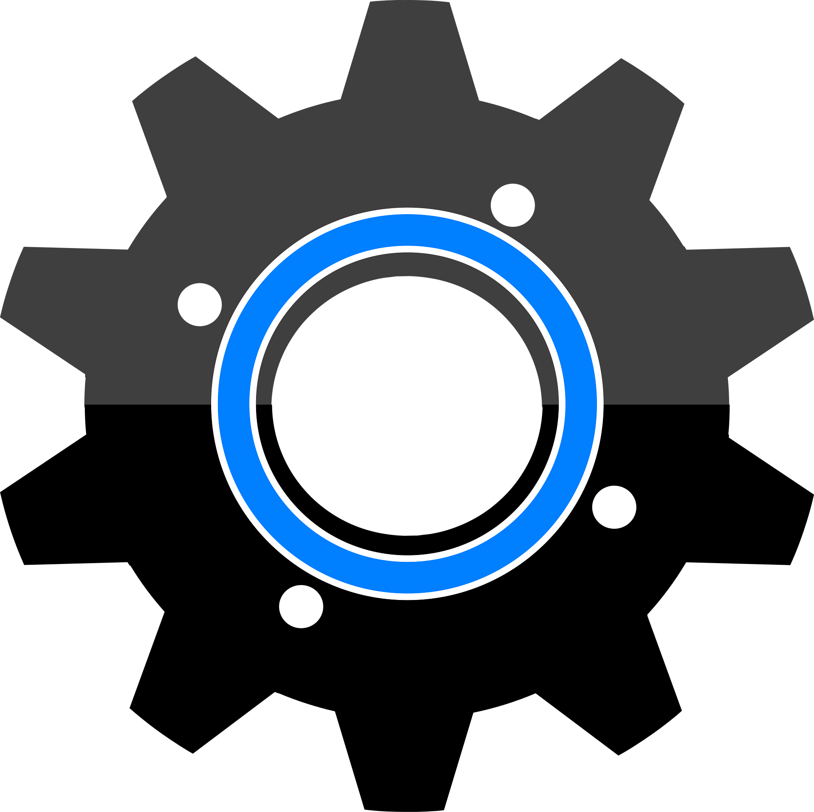

Universities juggle many disconnected tools. That duplication means wasted effort, inconsistent data, and a weaker experience for everyone who depends on campus services.
Fragmented systems spread work across silos: duplicate processes, poor accessibility to information, and an experience that changes from one portal to the next.
Staff repeat the same tasks in different places. Students lose time hunting for the right system. None of that is inevitable—OperO is built to replace the patchwork with one coherent platform.
OperO delivers one integrated platform with pluggable modules and standardised workflows—so institutions can deploy what they need without rebuilding the stack every time.
Shared navigation and consistent patterns make training and support simpler. Modules can roll out in stages, aligned to how your campus actually operates.